From Silicon to Intelligence.
從晶片到智慧系統，
解決
高難度 AI 工程問題。
我們為半導體、工業、醫療與科技企業提供客製化 AI 演算法、模型部署、智慧代理系統及高效能運算基礎設施研發。
fig.01 — power spectral density · live signal trace
Quantify to Conquer.
研究驅動的深科技工程工作室
代表案例與技術專題
全部案例


四大工程解決方案
-
晶片端與嵌入式 AI
模型需要在目標晶片運行。評估算子與資源，交付裝置驗證計畫。
查看證據 -
企業 Agent 可靠性
代理流程需要穩定且可稽核。設計工具流程，交付評估集與失敗回復規則。
查看證據 -
GPU 運算基礎設施
多種工作需要共用 GPU。驗證排程策略，交付 PoC、執行紀錄與容量建議。
查看證據 -
科學運算與研究工程
研究假設或模擬需要驗證。建立數值模型與可重跑實驗，交付資料及方法。
查看證據


開始合作


技術與公司索引

收合技術與公司索引
工程成果短片
技術能力與架構
§ 01
能力
/ Capabilities
半導體與邊緣 AI
AI 運算基礎設施
AI Agent
AI for Science
臨床 AI Clinical
訊號與時序 Signal & Time-Series
金融與量化 Quant
工業 AI Industrial
硬體 Hardware
先確認 NPU、GPU、FPGA 或光子架構的算力、算子和量測限制。
演算法 Algorithms
依任務選擇生成式模型、深度學習、訊號處理或量子機器學習方法。
系統 Systems
把模型接入 Agent、資料流程、運算排程與可維護的軟體系統。
應用 Applications
依醫療、金融、工業或企業場域定義測試條件和驗收方式。

01
邊緣 AI 與晶片端生成式 AI
Edge AI & On-device Generative AI
為 Diffusion、GAN 與辨識模型規劃裝置端部署。依目標平台評估模型匯出、算子相容性、量化與推論品質。
晶片端部署與評測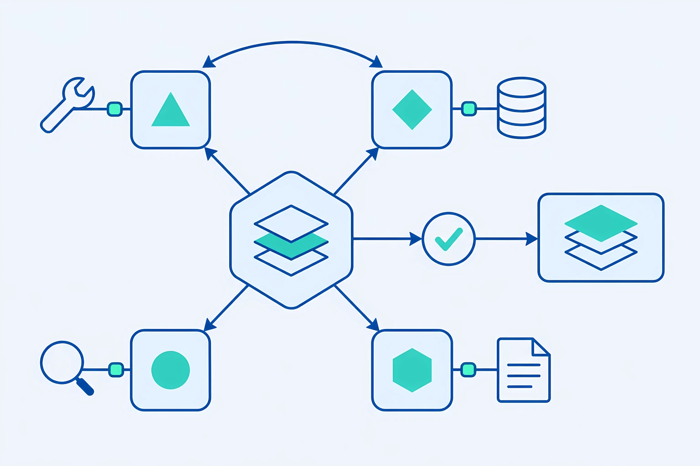
02
AI Agent 與多代理系統
Agentic AI & Multi-Agent Systems
工具調用、MCP、多代理分工與交叉查核，把重複且需要專業判斷的知識工作，變成有品質閘門的工作流程。

03
科學 AI 與研究自動化
AI for Science & Research Automation
文獻檢索、證據查核、假說生成與實驗稽核，讓研究流程可追溯、可重現。
Paper Evidence · 自動化研究 pipeline

04
臨床 AI 與腦機介面
Clinical AI & Brain–Computer Interfaces
從原始腦波與生理訊號，到臨床可用的預測與決策工具，以研究標準驗證每一步。
EEG 療效預測模型已於醫學中心門診使用

05
訊號處理與時序建模
Signal Processing & Time-Series
以頻域、時頻與統計方法做降噪、預測與異常偵測，在高雜訊中萃取微弱訊號。
FreqLens · Large Cognition Model
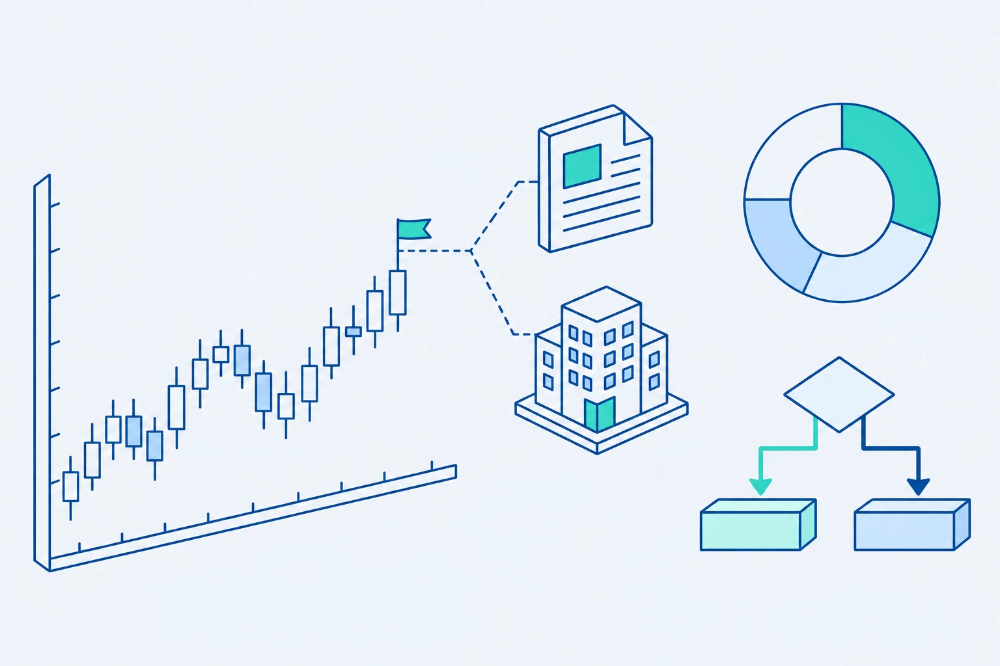

07
量子與混合機器學習
Quantum & Hybrid Machine Learning
變分量子電路與混合架構的可行性驗證，一律搭配參數相當的古典對照組，誠實回報差異。
Phys. Rev. A · Quantum Sci. Technol. · ICASSP
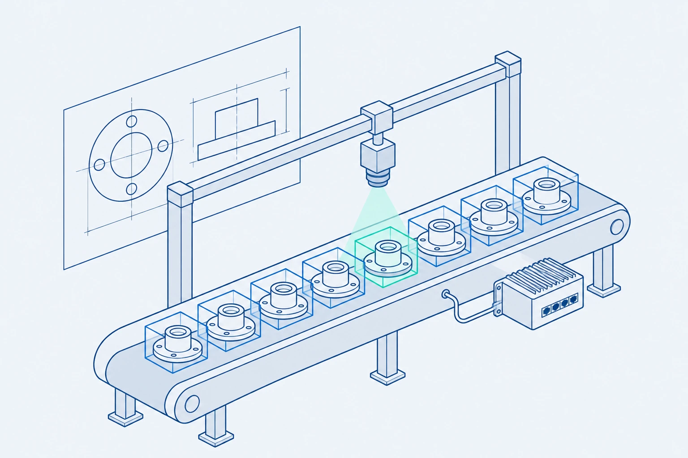
08
工業 AI 與電腦視覺
Industrial AI & Computer Vision
工作站佈局最佳化、CAD 圖面解析、影像辨識與邊緣裝置部署。
機器人工作站設計 · 平面圖辨識 · 跌倒監測

09
AI 產品工程與評估
AI Product Engineering & Evaluation
知識庫與 RAG、LLM 整合、全端產品、雲端部署與自動化測試，並量測 AI 是否有效、可靠、划算。
tokenbench · sevencheck 公開程式碼
AI 運算基礎設施與模型效能工程
AI Infrastructure & Performance Engineering
針對企業私有運算與研究環境，設計 GPU／CPU 工作佇列、資源分配和監控，並用同一組工作負載比較延遲、吞吐量與資源用量。
GPU 運算與效能工程服務完整服務與合作模式
§ 02
服務與合作模式
/ Services從你要解決的問題出發。每個方案在開始前，都會先一起把範圍與交付物定義清楚。
晶片端 AI 與生成式模型最佳化
Edge AI & Generative Model Deployment
針對 NPU、GPU 或嵌入式目標平台，評估人物消除、背景修復、場景合成與辨識模型的裝置端可行性。
可約定交付物
- 目標硬體、Runtime 與模型算子相容性評估
- 依平台支援的模型匯出、轉換、量化與推論原型
- 依測試條件記錄延遲、記憶體與影像品質，附部署限制與交接文件
AI 運算基礎設施與效能工程
AI Infrastructure & Performance Engineering
為企業與研究團隊規劃 GPU 工作負載、資源共享、任務監控及效能量測。可先在目標環境驗證排程與部署流程，再據結果規劃擴展。
可約定交付物
- GPU／CPU 工作排程、資源配額及利用率評估
- 任務狀態、錯誤追蹤、監控與部署原型
- 用可重現的工作負載測試模型品質、延遲、成本與資源耗用

01重點服務
客製化 AI Agent 系統
Custom AI Agent Development
把重複且需要專業判斷的知識工作，變成能調用工具、存取資料、有品質控制的 AI 工作流程。
交付物 Deliverables
- Agent 工作流程設計與工具、資料串接
- 自動檢查與人工審核節點
- 執行紀錄、評測集與上線部署

02重點服務
AI 評估與成本最佳化
AI Evaluation & Optimization
不只幫你做 AI，也量測它是否有效、是否可靠，並找出降低推論成本的空間。
交付物 Deliverables
- 針對你任務的評測集與基準
- 模型、提示詞與架構的比較報告
- Token、延遲與品質的權衡建議

03重點服務
研究即服務
Research as a Service
給需要 AI 研發、但還沒有完整研究團隊的新創與中小企業：把一個未知的問題做成有結論的研究。
交付物 Deliverables
- 文獻調查與方法選型
- Baseline 實作、消融實驗與對照組
- 可行性報告與可重現的程式碼
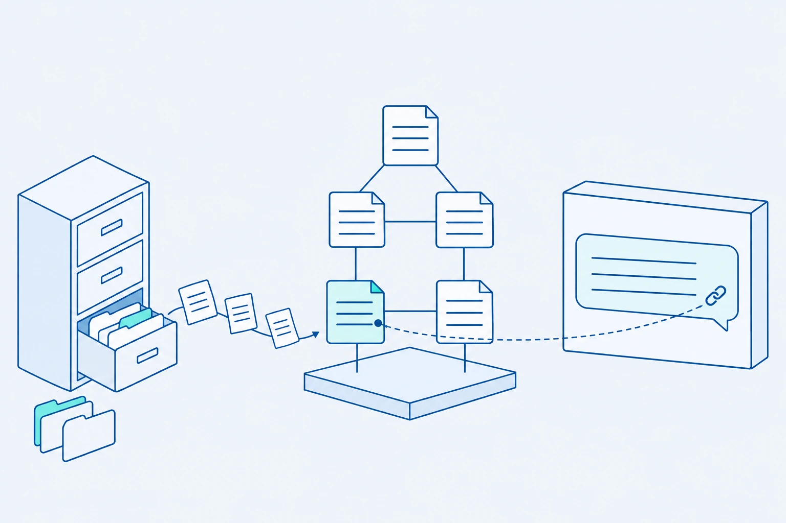
04
企業知識庫與智慧問答
Enterprise Knowledge Base
把散落的文件變成可查詢的知識庫；文件互相矛盾時，先仲裁再回答。
交付物 Deliverables
- 文件建庫與知識抽取流程
- 附引用來源的問答系統
- 專家審查介面與回歸評測
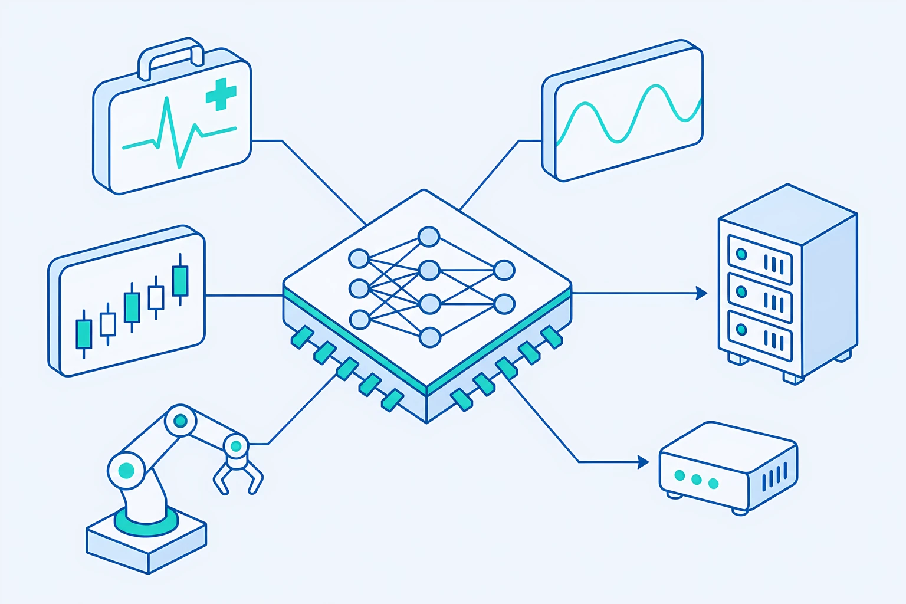
05
領域 AI 演算法研發
Domain AI R&D
醫療、生理訊號、金融與工業場域的模型與演算法，從資料到可部署的系統。
交付物 Deliverables
- 模型與演算法原始碼
- 驗證報告（含基準與誤差分析）
- 可部署的推論服務，或量化後的邊緣／NPU 版本

06
AI 技術診斷與架構規劃
AI Assessment & Architecture
還不確定該不該做、該怎麼做時，先用少量投入釐清可行性、風險與路線。
交付物 Deliverables
- 現況與可行性評估
- 技術選型與系統架構建議
- 風險清單與分階段路線圖
全部採專案制報價，依範圍與交付物估算。歡迎直接來信描述需求。
合作方式
/ Engagement Models依問題的階段與規模，選擇最合適的合作方式。
01
顧問諮詢
Advisory
針對特定技術難題提供方向評估、方法選型與決策建議，以少量投入快速釐清可行性與風險。
02
PoC 驗證
Proof of Concept
在投入完整開發前，先以可重現的實驗驗證關鍵技術與假設，用最小成本確認「這條路走得通」。
03
MVP 製作
MVP Build
打造最小可行產品，用最短路徑把核心價值做成能實際使用、可拿去驗證市場的雛形。
04
專案外包
Project Delivery
完整承接專案，從問題定義、方法設計到系統交付一手包辦，產出穩健、可維護、可上線的成果。
05
長期技術夥伴
Long-term Partner · Fractional CTO
以持續合作的方式深入你的團隊與場域，提供穩定的技術支援、迭代與共同研發；也可擔任兼任技術長，協助技術決策與團隊建置。
完整案例與篩選
§ 03
精選案例
/ Selected Work依產業、技術或專案狀態找案例。各頁標明成果的歸屬、證據和適用範圍。
產業可複選，案例必須同時符合所有已選條件。可用網址分享搜尋與篩選結果。
沒有同時符合所有條件的案例。

精選案例 · 工業智慧
工業機器人工作站智慧設計平台
Industrial Robot Workcell Design Platform
規劃碼垛工作站時，工程師要同時考量廠房尺寸、機器人可達性、節拍與設備成本。
- 從自然語言需求抽取工程規格，並整合廠房 CAD 圖面。
- 篩選機器人與設備候選，建立工作站佈局並檢查空間可達性。
- 比較候選方案的節拍估算與運動限制，輸出 2D／3D 檢視、CAD 與物料清單。
工作站設計可從需求走到 CAD、物料清單與候選佈局，供工程審查。
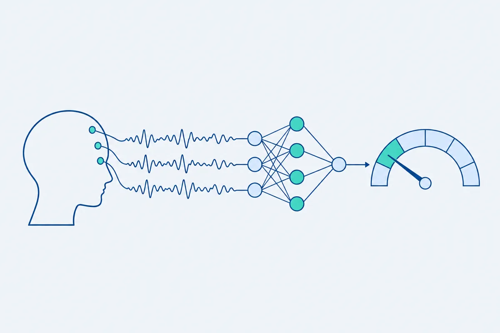
精選案例 · 醫療與神經科技
腦波憂鬱症療效預測
EEG Research on Depression Treatment Response
非侵入性腦刺激的治療反應因人而異，臨床團隊希望在治療前取得可供判讀的資訊。
- 從治療前額葉腦波擷取線性與非線性特徵。
- 比較腦波特徵與分類方法對治療反應預測的影響。
- 依論文定義比較不同資料集與門診群體。
已發表跨資料集比較及驗證，研究模型亦有門診使用經驗。
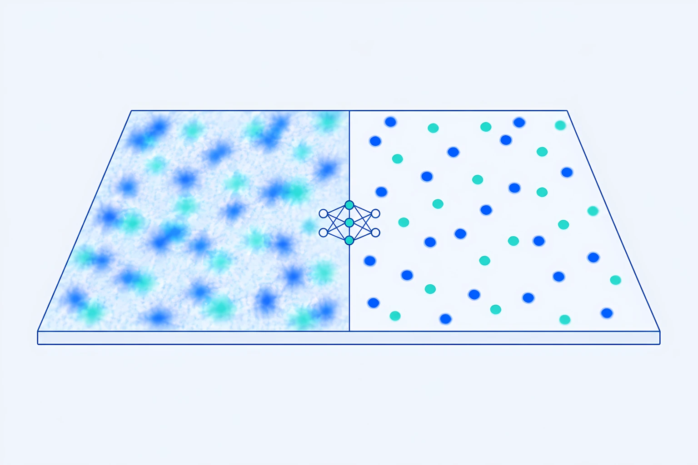

精選案例 · 金融與決策智慧
AI 投資研究平台
AI Investment Research Platform
投資研究需要跨文件整理事實、公司關係與時間先後。摘要若和來源脫節，後續很難查證。
- 匯整來源資料並建立可回看的研究筆記。
- 從公開文件整理公司與供應鏈關係，維護原始引用。
- 在對話工作區組合查詢與筆記，支援多語版本。
研究工作區支援回看版本與引用，並連結至公司關係的原始文本。


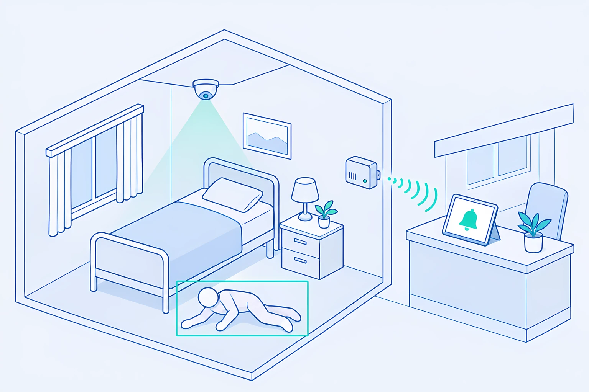
精選案例 · 醫療與神經科技
養老院即時跌倒監測
Edge Fall Monitoring for Long-Term Care
長照場域需要及時辨識可能的跌倒，並讓照護人員能夠確認事件。
- 建立感測資料到事件辨識的處理流程。
- 依邊緣裝置的運算資源調整執行方式。
- 把辨識結果交給告警流程並保留事件供查核。
完成邊緣裝置上的感測、辨識與告警整合。
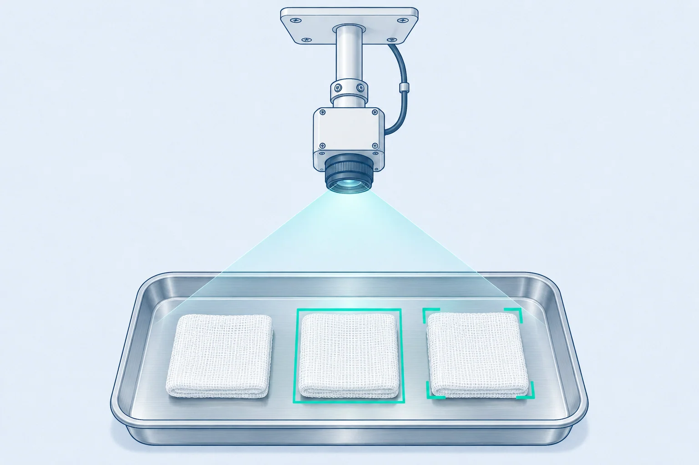
精選案例 · 醫療與神經科技
手術中體內紗布即時辨識
Real-Time Detection of Gauze Inside the Patient During Surgery
紗布置於患者體內術野時，可見範圍會隨取像角度與遮擋變動。畫面上的位置與時間標記能協助醫護回看特定影格。
- 在微創手術影片的影格標註體內術野可見的紗布。
- 公開研究比較 YOLO 系列與 Faster R-CNN，並評估過濾誤報的調節模組。
- 將偵測結果轉為紗布出現的時間線，逐影格與人工標註對照。
已備妥單類別訓練資料切分設定與兩組候選模型的訓練入口。
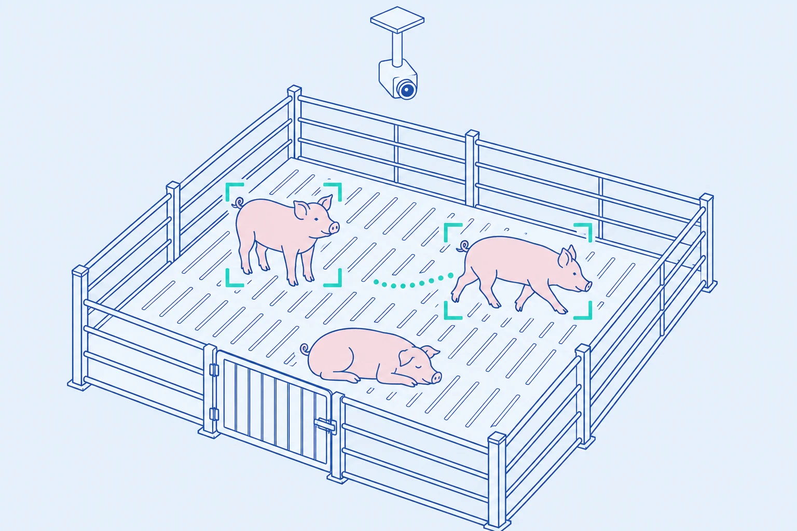
精選案例 · 工業智慧
養豬場豬隻動作即時辨識與追蹤
Real-Time Pig Behavior Recognition and Tracking
同一欄內有多隻豬同時活動。監測需要把連續影格中的位置和行為變化對應到各自的追蹤軌跡。
- 從固定攝影機影像定位畫面中的多隻豬。
- 跨影格串接同一個體的定位，記錄單鏡頭內的追蹤 ID 和移動軌跡。
- 以連續片段評估站立、行走與躺臥等動作，記錄動作起迄時間。
目前公開範圍為豬舍影像的動作分類、個體追蹤及串流效能評估規劃。

精選案例 · AI Agent 與企業智慧
大學普物個人化 AI 家教
Adaptive Introductory Physics Tutor
大班普通物理課程中，學生的進度與卡關原因各不相同。
- 整理課程教材與檢索索引。
- 結合教材檢索與對話介面，產生貼近課程的解說和練習。
- 依學生狀態調整練習或複習建議。
完成普通物理家教應用，提供學生使用。

技術專題 · 半導體與邊緣 AI
晶片端生成式 AI｜人物消除與場景生成
On-device Generative Vision: Person Removal and Scene Synthesis
人物消除需要補回被遮住的背景。部署到裝置時，輸出品質、模型所需記憶體和運算成本都要評估。
- 取得人物遮罩，檢查邊界誤差並定義補畫範圍。
- 建立可比較的 GAN 修補或 Diffusion 場景重建候選，檢查輸出品質。
- 轉換模型、核對 Runtime 相容性，依目標裝置與工作負載執行完整流程驗證。
可切換場景、遮罩與修補輸出。桌面 CPU 結果同時列出延遲與遮罩內品質，揭示紋理差異影響兩種方法的相對表現。
技術專題 · 半導體與邊緣 AI
光子運算與故障模擬
Photonic Computing and Fault Simulation
光子運算架構對相位誤差與插入損耗敏感，設計初期需要釐清元件變動對輸出的影響。
- 先以兩個理想 50:50 耦合器與雙臂相位建立可驗證的 MZI。
- 在四通道網格中交錯配置相鄰耦合元件，逐級傳播複數光場。
- 比較理想與故障的各埠輸出光強、總功率及相對輸出誤差。
可逐階段觀察故障如何傳播，並在同一輸入下比較各埠輸出光功率、總輸出及相對差異。
技術專題 · AI 基礎設施與產品工程
GPU 運算資源排程
GPU Compute Orchestration
共享運算環境若同時有多個工作，必須兼顧資源需求、等待順序與資源利用。
- 為各合成工作定義所需 CPU、VRAM 和執行步數。
- 依單機資源上限與選擇的 FIFO 或回填策略判斷是否可開始工作。
- 沿離散時間步釋放資源，更新工作狀態、時間軸和資源尖峰。
在測試的單 GPU 執行槽設定下，兩件 CUDA 工作依序執行，CPU 工作與第一件 CUDA 工作並行。兩件 CUDA 工作的程序級取樣峰值均為 286 MiB。

技術專題 · 金融與決策智慧
自動做市商再平衡研究
Automated Market Maker Rebalancing Research
自動做市商的流動性部位隨市場價格改變，比較再平衡決策時需要固定資料期間和實驗條件。
- 將自動做市商的再平衡決策表示為二元分類問題。
- 按時間切分 BTC/USDC 歷史日資料，使用相同期間比較混合量子經典模型與經典、純量子基準。
- 依公開論文的模擬設定比較報酬、Sharpe 比率與最大回撤。
已公開方法與歷史模擬比較，可按論文中的資料期間、基準和交易設定解讀。
過往客戶 / Clients
- 國家高速網路與計算中心
- 工業技術研究院
- 臺北榮民總醫院
- 國立臺灣大學醫學院附設醫院
-
多家國內外科技新創（不具名）
工程工作方式
§ 04
工作方式
/ How We Work我們最擅長的，是從零研究一個還沒有標準答案的問題：先定義清楚、設好基準與對照組，設計方法並以實驗驗證，再把它工程化成真正能用的產品。
01
問題定義
Define
把模糊的需求收斂成可量測、可驗證的問題。
02
方法設計
Design
從文獻與基準出發，設計合適的量化方法與評估指標。
03
原型驗證
Validate
以基準、對照組與消融實驗驗證，確保結果可重現、可解釋。
04
系統交付
Deliver
將方法工程化為穩健、可維護、可部署的系統。
研究成果與論文
§ 05
研究成果
/ Research創辦人與研究團隊的公開研究，涵蓋生成式模型、量子運算、腦波與時序訊號。各列標明期刊、會議或預印本來源。
科學模擬與量子機器學習 Scientific Simulation & Quantum ML
Physical Review A · 2025
Unraveling quantum environments: Transformer-assisted learning in Lindblad dynamics以 Transformer 學習開放量子系統的環境動力學
Quantum Sci. Technol. · 2026
Quantum Adaptive Self-Attention for Quantum Transformer Models量子自適應自注意力機制（QASA）
arXiv · 2025
Quantum-Enhanced Channel Mixing in RWKV Models for Time Series Forecasting混合量子與傳統 RWKV 的時序對照實驗
IEEE ICASSP · 2026
Quantum Adaptive Self-Attention for Financial Rebalancing: An Empirical Study on Automated Market Makers in Decentralized Finance量子注意力用於去中心化金融的資產再平衡
生成式模型與電腦視覺 Generative AI & Computer Vision
IEEE ICASSP · 2026 · Oral
Quantum Reinforcement Learning-Guided Diffusion Model for Image Synthesis via Hybrid Quantum-Classical Generative Model Architectures量子強化學習引導的擴散生成模型
JMIR Med. Inform. · 2025
Exploring the Potential of Electroencephalography Signal–Based Image Generation Using Diffusion Models以擴散模型探索腦波訊號到影像的生成方法
PLoS ONE · 2025
Improving fine-grained food classification using deep residual learning and selective state space models以狀態空間模型做細粒度影像分類（Res-VMamba）
腦波基礎模型與時序可解釋性 EEG Foundation Models & Time Series
arXiv · 2025
Large Cognition Model: Towards Pretrained EEG Foundation Model跨電極配置的腦波基礎模型（LCM）
arXiv · 2024
Mind's Eye: Image Recognition by EEG via Multimodal Similarity-Keeping Contrastive Learning從腦波辨識所看到的影像（MUSE）
IEEE SiPS · 2024
QEEGNet: Quantum Machine Learning for Enhanced Electroencephalography Encoding量子機器學習腦波編碼；延伸版刊於 J. Signal Processing Systems（2026）
完整論文列表見 Google Scholar ↗
Labs 專案與篩選
§ 06
Quantquer Labs
/ 自主研發與開源我們自己開發、自己使用的工具。每一項都標明目前狀態：提供可查閱的公開程式碼，並標記內部工具與研發中項目。
互動技術展示 Technical Demo Lab
操作合成影像修補、光路故障與 GPU 排程，並查看各模型的輸入、輸出和限制。
可複選，只顯示符合所有所選主題與狀態的工具。
沒有符合所選主題與狀態的工具。
paper-evidence開源
證據導向的文獻分析
從文獻抽出可驗證的證據；LLM 對來源的每個宣稱，都必須有原文與數字上下文支持才放行。
應用 可追溯的研究報告

tokenbench程式碼公開
LLM 應用的 Token 效率基準
在本機可重現地量測 LLM 應用的模型呼叫、token 用量與答對率，比較不同策略的成本與品質。
應用 企業 LLM 降本

sevencheck開源
LLM 輸出的確定性檢查
七類不需第二個模型的驗證，專抓「看起來合理但其實錯了」的輸出：改寫過的引文、捏造的引用、被截斷的統計。
應用 高可靠性 AI 工作流

AutoResearch內部使用
自動化研究多代理系統
文獻監控、構想辯論、預註冊閘門、實驗、撰稿、審稿模擬到數字稽核，關鍵節點保留人工把關。
應用 企業研發自動化

Hypogen開發中
投資假說產生器
從一個問題展開多層供應鏈關係、排序瓶頸，產生附觸發與失效條件的假說，並逐句回查引用。
應用 投資研究、產業分析

Bazaar of Fates程式碼公開
確定性引擎 × LLM 的產品架構
十一套確定性計算引擎負責運算，LLM 只負責解讀：示範如何把複雜的領域規則做成可信的 AI 產品。
應用 規則型 AI 產品
創辦人與公司資料
§ 07
關於
/ About陳麒升
創辦人 · Founder
具電子物理與生醫資訊訓練，曾任數位 IC 設計工程師及 AI 新創共同創辦人與 CTO。研究涵蓋腦波訊號處理、臨床決策支援與量子機器學習。學術與專業經歷
急救研究分為高雜訊語音處理，以及以結構化創傷資料進行預測建模。腦波療效預測源自碩士研究，後續由醫療團隊應用於門診。
交大 NYCU
台大 NTU
聯發科 MediaTek
學術研究經歷 Academic research
過往客戶與合作夥伴
§ 08
夥伴服務
/ Partner Services串接專業夥伴與合作廠商，補齊數位與硬體整合需求——從量測儀器與驗證、AOI 影像檢測、AIoT、工業電子維修，到企業 AI 導入與數位轉型，把研究級方法延伸為完整的軟硬體交付。
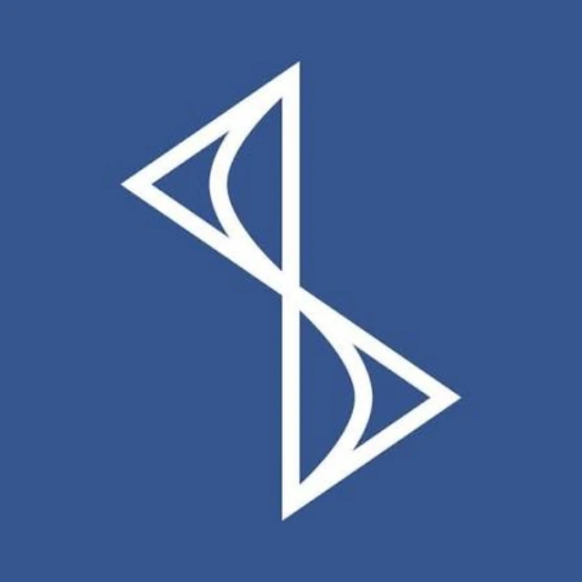
識新科技
↗Scito Technology Co., Ltd.
量測驗證與自動化系統整合
- IC 檢測、量測驗證與儀器整合
- 光學、運動控制與自動化檢測機台
- AI 影像辨識、訊號處理與遠端控制

緯宇國際
↗Weft International Co., Ltd.
量測儀器代理與測試系統整合
- NI 國家儀器北部經銷與系統整合
- LabVIEW 專案開發、嵌入式 FPGA 與資料擷取
- FBG 光纖感測、AOI 檢測與 USRP 射頻應用

嶸鐿科技
↗AOI Systems
AOI 影像檢測與產線自動化整合
- 影像檢測與瑕疵檢測機台
- 三維量測、ToF 3D 檢測與 PCB 翹曲檢測
- 資料串流、電控與產線 UI 整合

睿基科技
↗RGTK
遠紅外線熱敷與長照 AIoT 安全偵測
- 遠紅外線熱敷系列產品
- 長照 AIoT 安全偵測與跌倒風險提醒
- 熱影像與 AI 影像辨識延伸照護場域

晶芯科技
↗JingXin Technology
工業電子維修與測試平台支援
- 工業電路板設計、維修與中古品支援
- 客製測試平台設計與翻修品質控管
- 反向工程、通訊資料分析與停產產品支援

歐碁科技
↗OG Technology
AI 產品與企業 AI 導入
- 對話 Agent、語音翻譯與文件理解
- 影像判讀、3D 數位人與合規稽核
- 企業私有部署，導入既有工作流程
築邦科技
↗Zhubang Technology Co., Ltd.
中小企業數位轉型解決方案
- 企業品牌網站設計與開發
- 企業戰情即時數據儀表板
- 客製化 ERP／CRM 與表單簽核系統
工業技術研究院
↗Industrial Technology Research Institute
合作廠商 · 國際級應用研究機構
- 先進半導體與量子科技、人工智慧與資安
- 智慧醫療與照護、智慧製造等尖端科技研發
- 1973 年成立，累積超過三萬件專利
資誠 PwC 顧問
↗PwC Taiwan
合作廠商 · 審計、稅務與顧問諮詢
- 企業顧問諮詢服務
- AI 與數位轉型
- 永續發展
聯絡方式與舊版需求表單
§ 09 / Contact
有一個別人解不動的問題？
來談談。
先說明問題、希望交付的成果，以及現有的資料或硬體。第一次對話會一起定義可行性驗證和驗收方式。